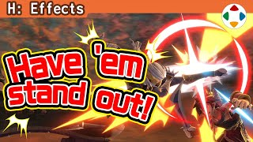
速览
攻击命中对手时的特效叫命中标记。樱井经手的作品多出比较华丽的命中标记，但基本是漫画式表现；特别是写实系作品容易变得奇怪，所以按作品平衡决定，也有用飞溅等其他东西代替的。《大乱斗 特别版》有很多种（斩击、贯穿、冰冻、电击……），用慢动作来看；防御标记等也算命中标记的一种。命中标记要求的条件：① 与效果相称的华丽：它是为了清楚展现效果、增加爽快感，基本要求华丽。② 对比分明：和之前的特效话题类似，线太细、只用加算混合而不清楚都不够好。③ 命中位置合适：攻击判定与被攻击判定（受击判定）重叠时命中，换算不好会在奇怪的位置出现标记；《大乱斗》是镜头拉远的游戏，攻击判定偏大，会让位置关系变难。④ 多要素并用：不只是放一张图，还要有向后贯穿的冲击波、向上飞出的飞溅，对机械还有火花；太杂也是问题，但适时混入多种颜色能更好地应对背景变化。⑤ 不过度遮挡角色：做起来挺难，也有强制降低命中标记显示优先级的方法，但会只剩地形之类，效果不好。⑥ 停留时间合适：连续命中的短、其他的长一些——视游戏内容而定，但即使长也建议比较早地淡出。⑦ 做出明度差：背景亮或暗都能看清最好，只用明亮特效在亮背景下不显眼，所以也要配置暗色——注意背景上铺了黑色。另外，有 hit stop 的游戏也要考虑：hit stop 中命中标记多半仍在动，停顿时间变长的部分应该有效利用。附带：在《特别版》中，受击方在 hit stop 时操作会出现一种特效——它显示吹飞方向：受击方的操作能稍微改变矢量，这个特效显示那个方向，是规则独特性很高的显示特效。
1. 什么是命中标记 0:03
攻击命中对手时的特效叫命中标记。樱井的作品多出比较华丽的命中标记，但基本是漫画式表现。
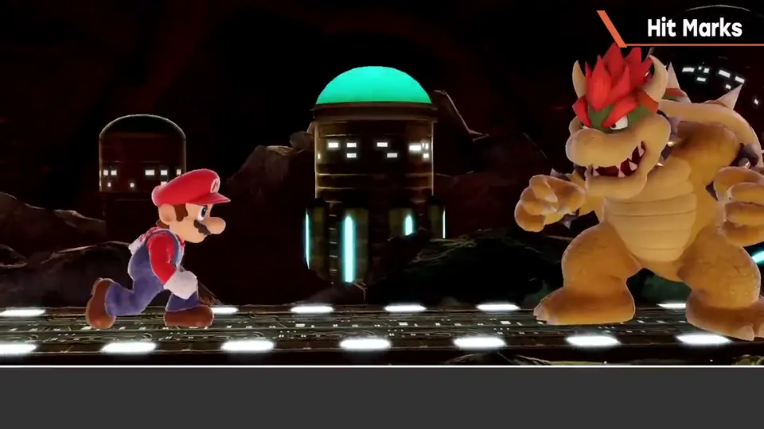
写实系作品容易变得奇怪，所以按作品平衡决定，也有用飞溅等代替的。
《大乱斗 特别版》有很多种，用慢动作来看；防御标记等也算命中标记的一种。
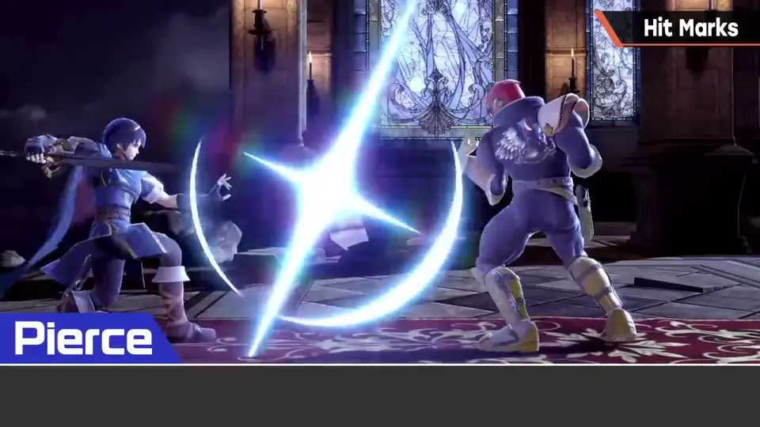
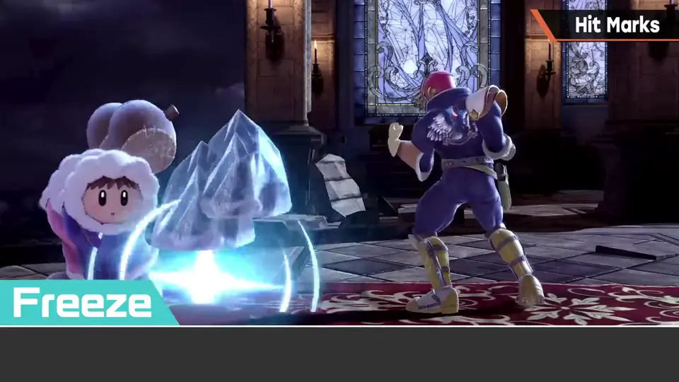
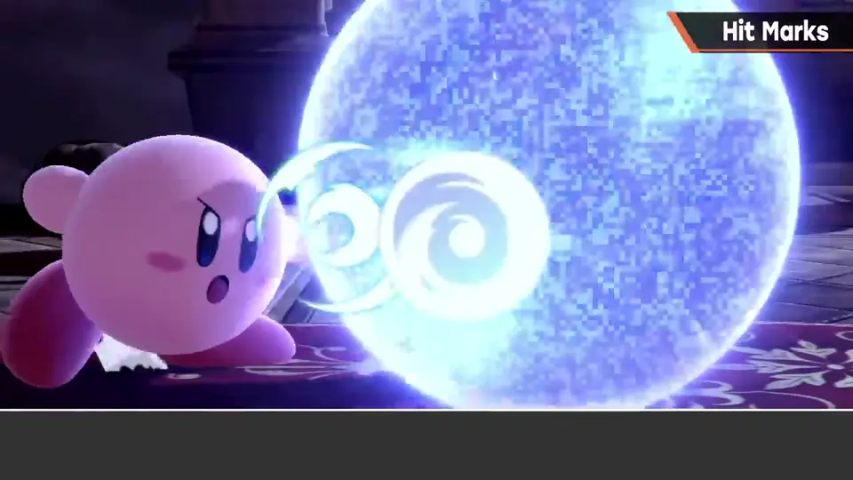
2. 条件①②：华丽与对比 1:12
- ① 与效果相称的华丽：为清楚展现效果、增加爽快感，基本要求华丽。
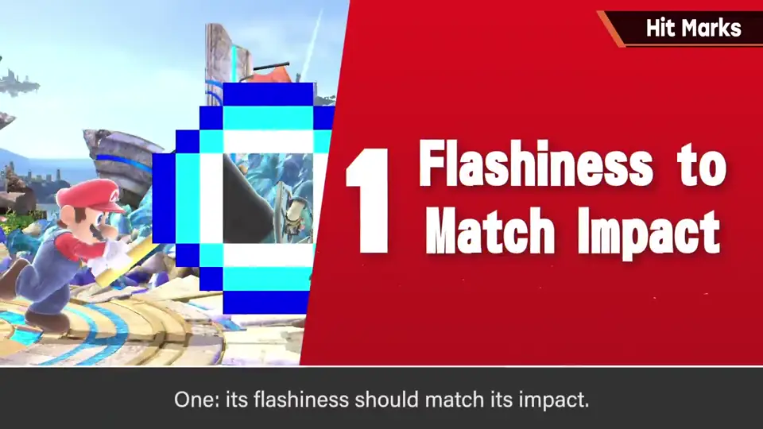
- ② 对比分明：线太细、只靠加算混合而不清楚，都不够好。
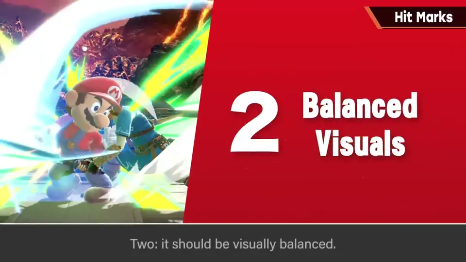
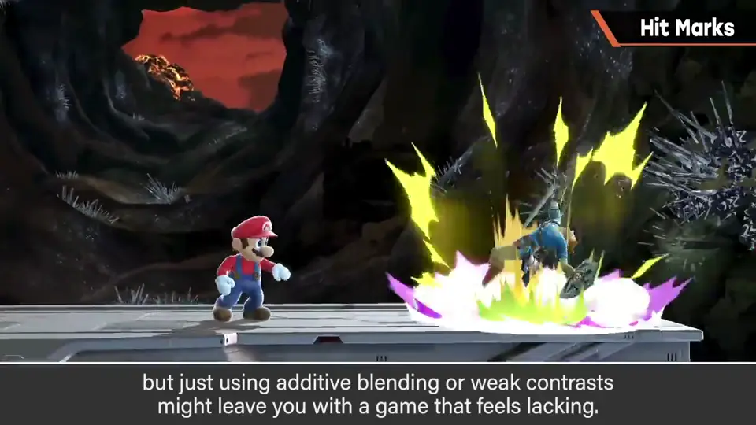
3. 条件③：命中位置 1:47
③ 命中位置合适：攻击判定与受击判定重叠时命中，换算不好会在奇怪位置出现标记。
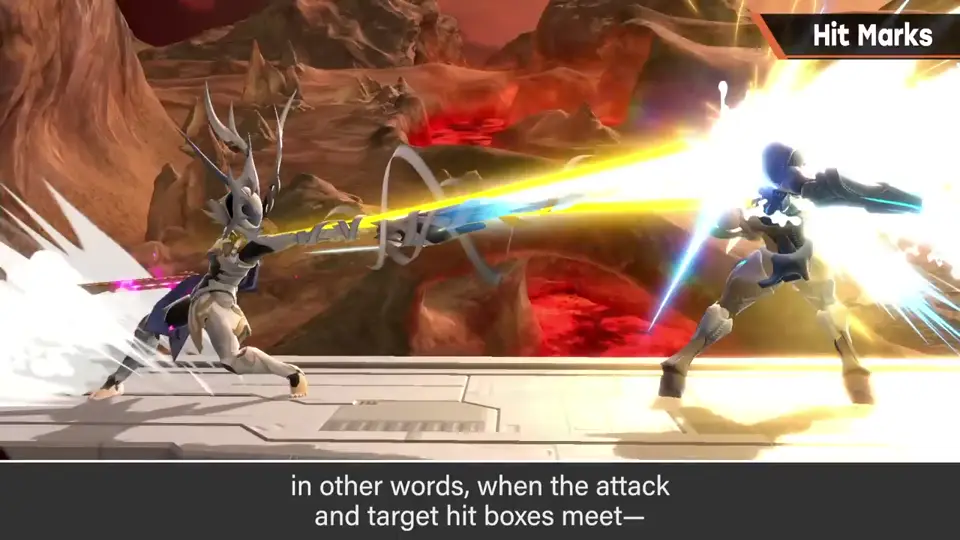
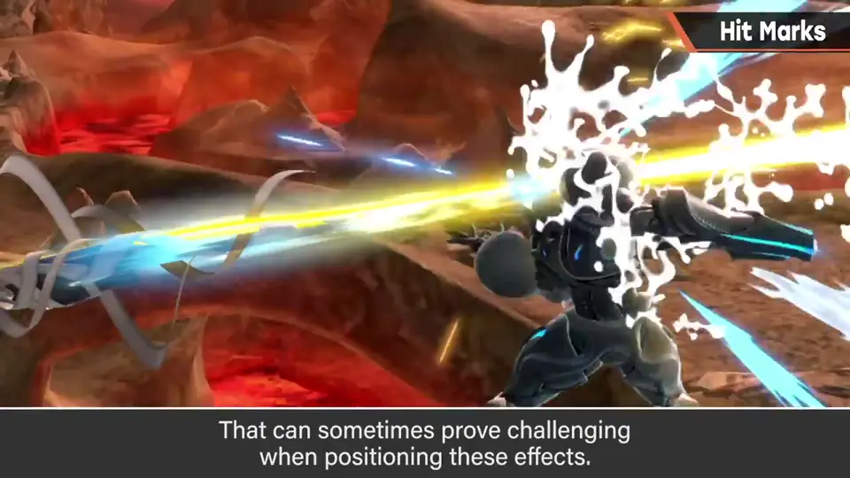
4. 条件④：多要素并用 2:04
④ 不只是放一张图：还要有向后贯穿的冲击波、向上飞出的飞溅，对机械还有火花。
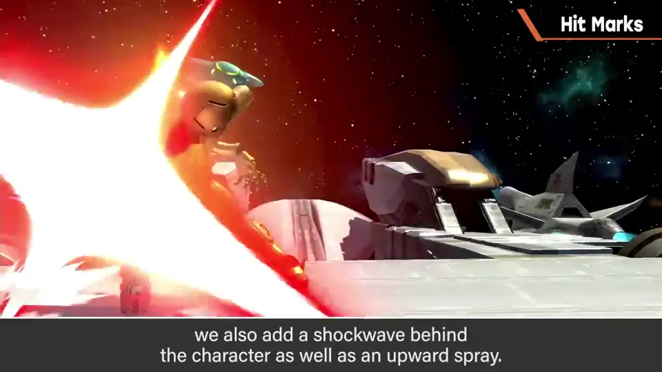
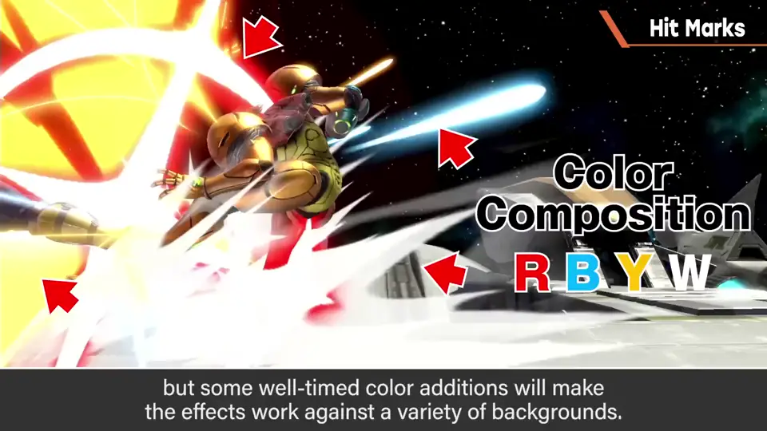
5. 条件⑤⑥：遮挡与时长 2:42
- ⑤ 不过度遮挡角色：做起来挺难；强制降低标记显示优先级的方法会只剩地形，效果不好。
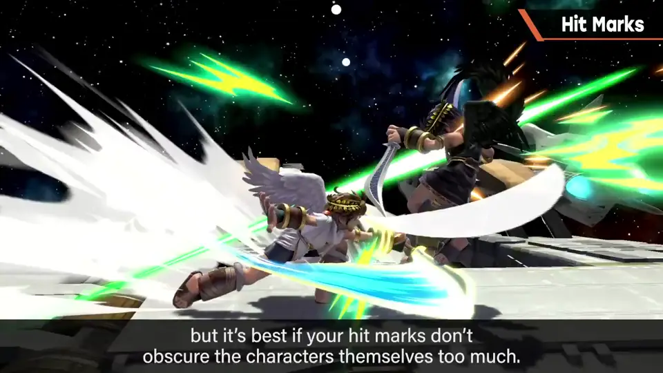
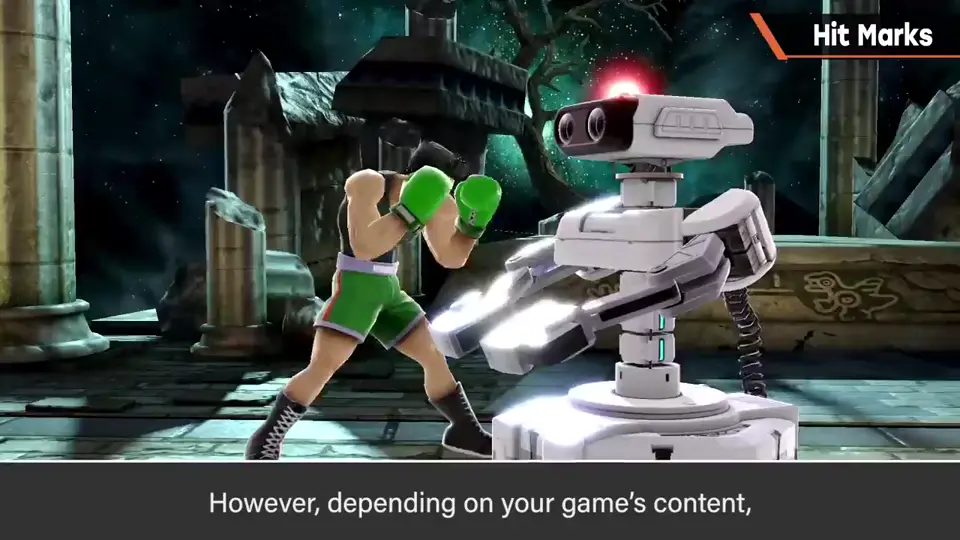
- ⑥ 停留时间合适：连续命中的短、其他长一些；即使长也建议较早淡出。
6. 条件⑦：明度差 3:19
⑦ 做出明度差：背景亮或暗都能看清最好。
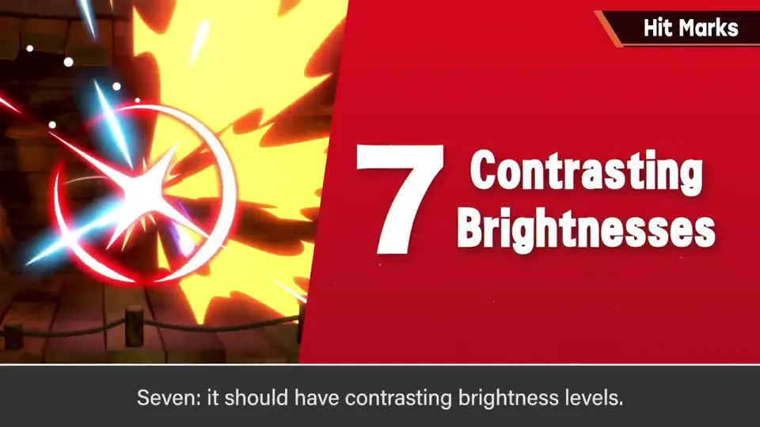
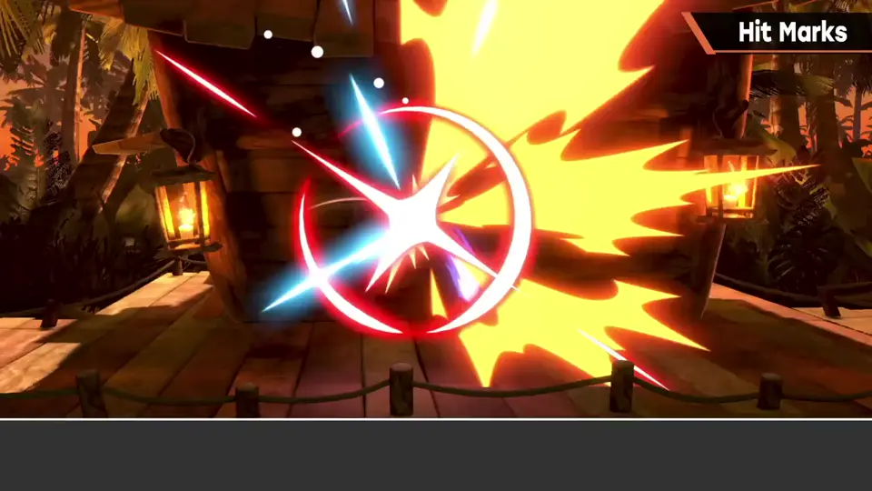
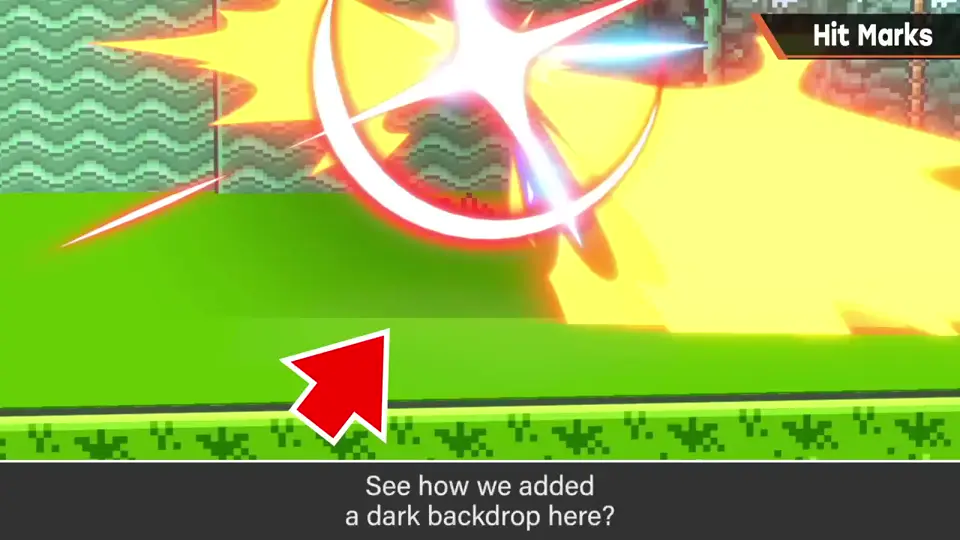
7. hit stop 与吹飞方向 3:56
有 hit stop 的游戏：hit stop 中命中标记多半仍在动，停顿变长的部分应有效利用。
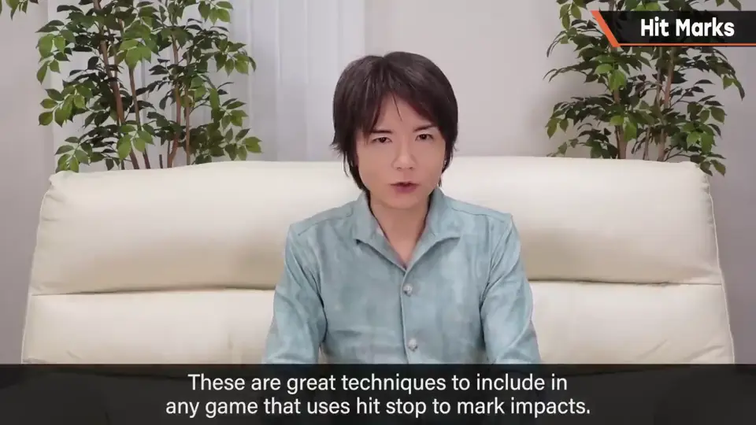
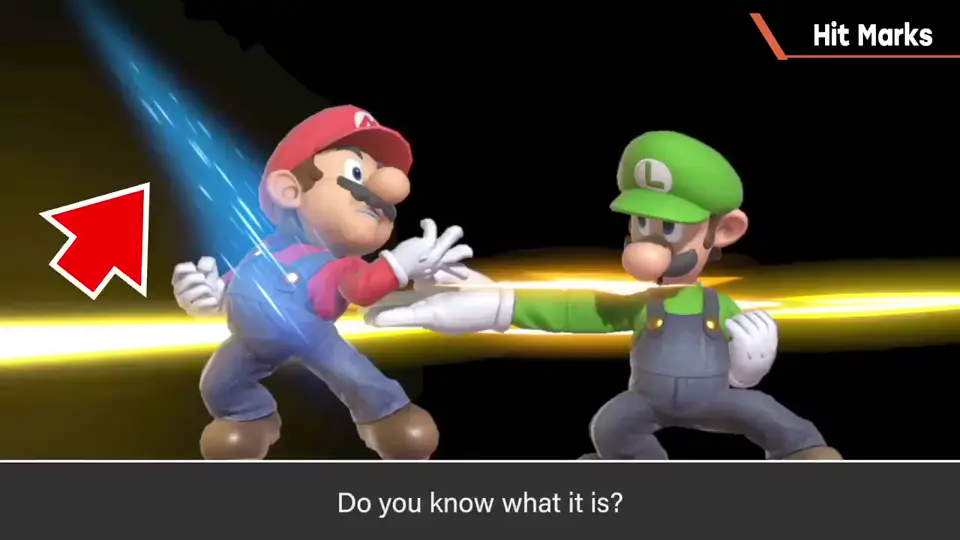
附带：《特别版》中受击方在 hit stop 时操作会出现一种特效——它显示吹飞方向。受击方操作能稍微改变矢量，这是规则独特性很高的显示特效。
自测题
1. 为什么《大乱斗》的命中位置较难处理？
镜头拉远，攻击判定偏大，判定重叠处与视觉位置关系难把握。 2:00
2. 命中标记为什么要「做出明度差」？
只用亮色在亮背景下不显眼，配置暗色（如铺黑）后明暗背景都看得清。 3:36
3. 《特别版》受击方在 hit stop 中操作时出现的特效表示什么？
吹飞方向：受击方能稍微改变矢量，特效显示该方向。 4:24